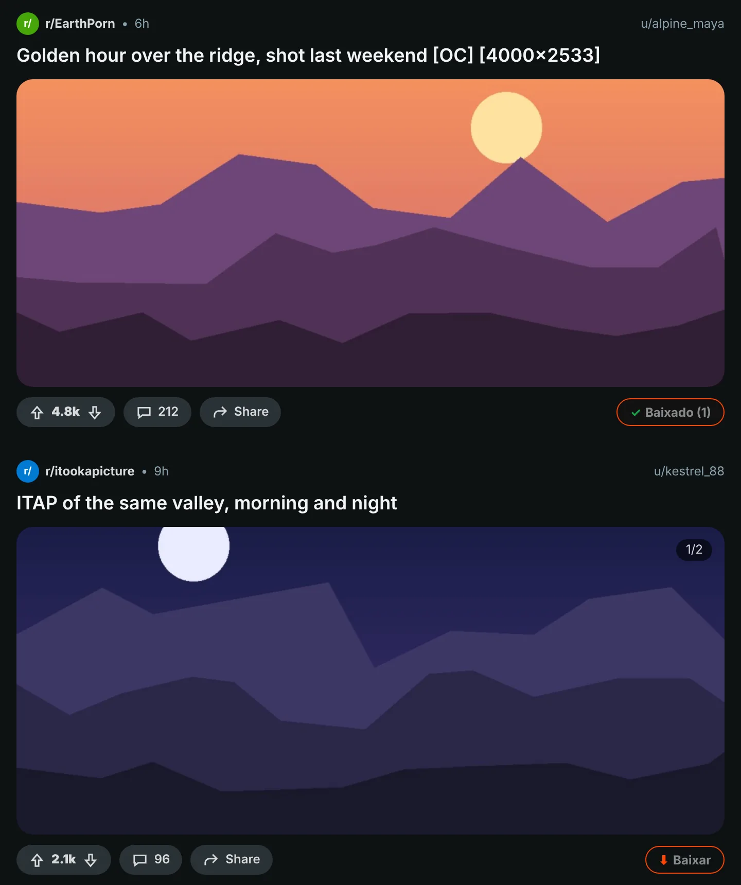
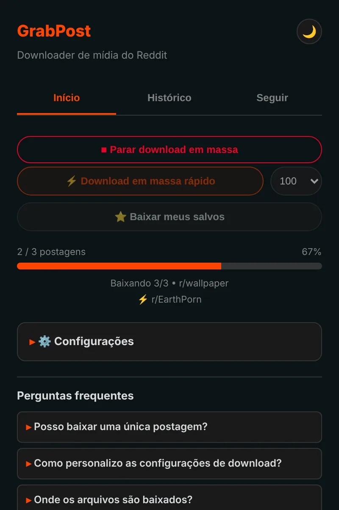
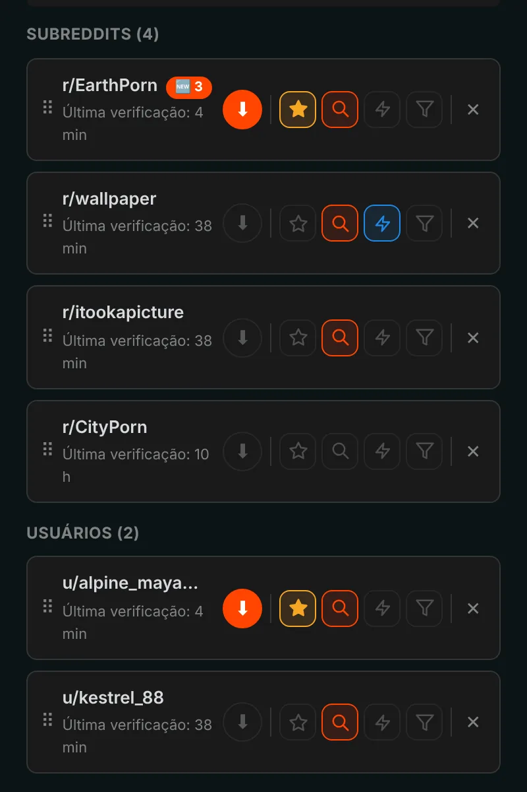
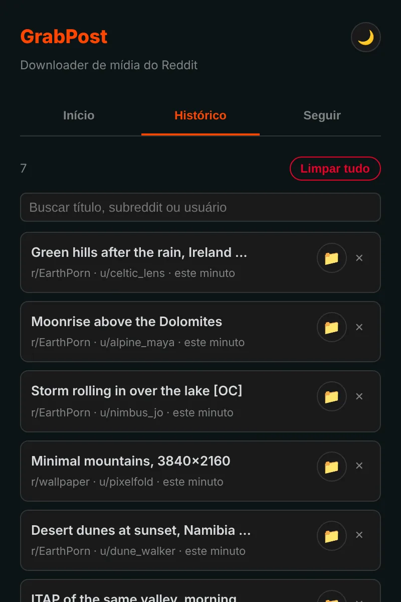

Salve qualquer coisa do Reddit com um clique.
O GrabPost coloca um botão Baixar em cada publicação do Reddit. Os vídeos mantêm o som, as galerias chegam completas e subreddits ou perfis inteiros baixam enquanto você faz outra coisa. Grátis e sem rastreamento.
Ainda não está nas lojas. Instalar pelo GitHub leva cerca de um minuto.

Aperte o botão da publicação.
Um botão em cada publicação
O botão laranja fica na linha de votos e compartilhamento de cada publicação: no feed, em perfis e nos resultados de busca, no Reddit novo e no antigo. Imagens, galerias, GIFs, Redgifs e links do Imgur funcionam. Alt+Shift+D baixa a publicação no meio da tela.

Páginas inteiras de uma vez
O modo rápido lê um subreddit, perfil, multireddit ou busca direto dos dados do Reddit, sem precisar rolar a página. Ele pula o que você já tem e para quando chega em publicações já baixadas. Suas publicações salvas baixam do mesmo jeito.

Siga, e o que é novo chega até você
Siga subreddits e usuários e receba uma notificação quando surgir mídia nova, ou deixe baixar sozinho. Filtre por tipo de mídia, NSFW ou palavras-chave. Até 10 favoritos podem ser verificados a cada 5 minutos.

Cada download fica registrado
O histórico lista o que você salvou, com busca, e as publicações que você já tem ficam marcadas no Reddit. Os backups são feitos automaticamente, então reinstalar não apaga sua lista.

Os detalhes estão resolvidos
Vídeos com som
O Reddit guarda o som num arquivo separado. O GrabPost encontra e junta tudo, dentro do seu navegador.
Suas pastas, seus nomes de arquivo
Modelos como {subreddit}/{user} para pastas e {date}_{title} para arquivos.
Sem duplicatas
Reconhece a mesma imagem mesmo que alguém a tenha repostado em outro subreddit.
Funciona junto com o IDM
Gerenciadores de download não conseguem tomar o arquivo e descartar os nomes das suas pastas.
Paciente com o Reddit
Quando o Reddit pede uma pausa, o GrabPost espera exatamente o tempo pedido e continua.
15 idiomas
A extensão e esta página falam o seu idioma.
O que você baixa só diz respeito a você
- Sem análises, sem rastreamento, sem conta
- Só conversa com o Reddit e com os sites que hospedam suas mídias
- Seu histórico e suas configurações ficam no seu navegador
- Código aberto no GitHub
Instale em um minuto
O GrabPost ainda não está na Chrome Web Store, então a instalação é manual. Funciona no Chrome, Edge, Brave, Opera e outros navegadores Chromium.
- Baixe o grabpost-v…zip mais recente no GitHub e descompacte numa pasta que você vai manter.
- Abra
chrome://extensionse ative o Modo do desenvolvedor no canto superior direito. - Clique em Carregar sem compactação e escolha a pasta grabpost descompactada.
- Abra o Reddit. O botão laranja aparece nas publicações, e o ícone na barra de ferramentas abre o painel do GrabPost.
Para atualizar, substitua os arquivos na mesma pasta e clique no botão de recarregar do cartão do GrabPost. Suas configurações e seu histórico continuam lá.
Firefox: a versão da loja de complementos está a caminho. Até lá, o zip do Firefox pode ser carregado temporariamente em about:debugging.
Perguntas
O GrabPost é grátis?
Sim, todos os recursos são grátis. Se ele economiza seu tempo, você pode pagar um café para o desenvolvedor.
Para onde vão os arquivos?
Para a pasta de downloads do navegador, dentro de uma subpasta que você escolhe. O padrão é Reddit Downloads, e os nomes dos arquivos começam com o nome do subreddit.
Preciso estar logado no Reddit?
Só para suas publicações salvas e para comunidades com restrição de idade. Todo o resto funciona sem conta.
Perco meu histórico se reinstalar?
Não. Com a sincronização do navegador ativada, as configurações e a lista de seguidos voltam sozinhas. Um arquivo de backup também é salvo automaticamente, e o GrabPost pode refazer o histórico a partir da lista de downloads do navegador.
Funciona no Edge, Brave ou Opera?
Sim. Qualquer navegador Chromium que carregue extensões sem compactação funciona com o zip do Chrome.
Baixar o GrabPost
Ainda não está nas lojas. Instalar pelo GitHub leva cerca de um minuto.